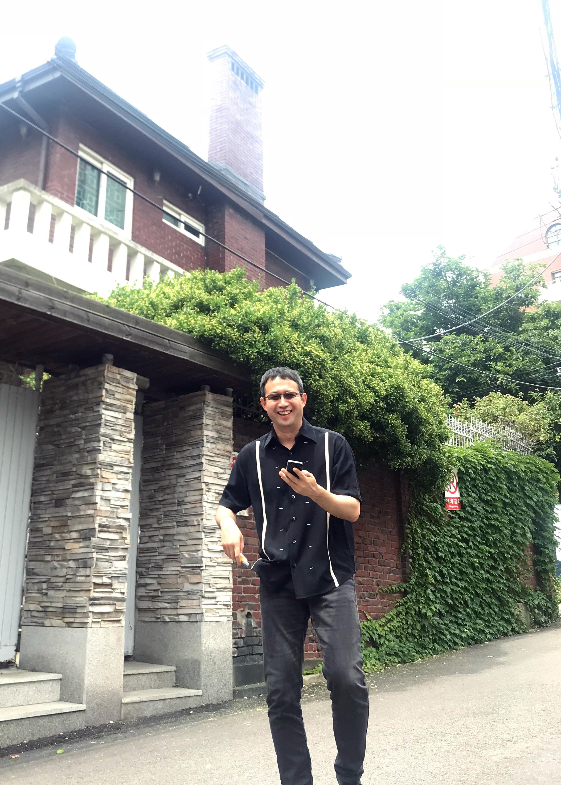

Principal Investigator
Department of Psychology, Yonsei University
Graduate Program in Cognitive Science, Yonsei University

Research in my lab is concerned with Vision, Cognition, and Consciousness. The long-term goal of our research is to understand how we process and experience a complex and rich visual world. One of the current foci of research is to understand the mechanism of ensemble perception and the interaction between ensemble perception and focused attention. We think that both ensemble perception and focused attention are necessary and complementary strategies for coping with our limited capacity. Another focus is to investigate how ensemble representation is utilized in category learning. We test normal participants as well as patients, using psychophysics, eye tracking, and ERP.
I was born and raised in KwangReung, an area famous for its thick woods, in South Korea. As a child I really enjoyed playing outside in the forest and reading books. Since there was no television in my house, I had no choice but to play outside and to read inside.
I chose Psychology as my major because I was good at mathematics (up to high school anyway). It was a strange reason, but it led me to experience the joy of studying vision. My interest in visual perception was initially sparked by the passionate lecture of Dr. Chan-Sup Chung, who eventually became my Master's thesis advisor. He said: "Vision is active information-processing, starting from the retina." This struck me hard because I had never before thought about vision as a complex problem to be solved and studied. I investigated the effect of attention on sensitivity and resolution for my Master's thesis.
The topic of attention led me to pursue my PhD with Dr. Anne Treisman. I still remember the first question she asked me: "What is attention?" Can you imagine my facial expression when I heard this question (this was before I got over my jet-lag)? During my graduate years, I tried to answer the question how we can rapidly experience the sensation of a high resolution, full-color photograph of our environment. Anne and I proposed that we summarize complex scenes by forming statistical descriptions of sets of similar items. This is achieved through a separate mode of processing that distributes attention to sets of similar items, in contrast to focusing attention on individual items. This topic still comprises one of major research areas in my lab today.
I wanted to learn about a new topic in my Post-doc period, which was the reason why I joined Dr. Randolph Blake's Lab. Life does not always reflect my ideals. During this period, I investigated the effect of attention on the initial selection of dominance and mean phase duration in binocular rivalry. My special interest in phenomena related to binocular rivalry led me to my current research focus, visual consciousness.
I am now very happy to have my own lab and be surrounded by bright students be it in my lab or the departments (Cognitive Science & Psychology). My only complaint is the growing number of titles and number of courses that I am teaching.